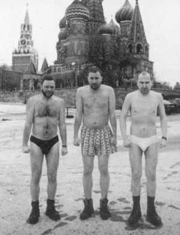

|
ДЕНЬ ГАЛЕРИСТКИ
Почему-то раньше никто не обращал внимания на тот факт, что 25 января родились сразу три видные петербургские галеристки. В Пушкинской Обсерватории за длинным столом пировала звезда кинофота Светлана Козак. Во флигеле, Ирина Актуганова, окруженная киберматеристками и детьми зачаровала всех исполнением народных песен-страданий. Дольше всех продолжался праздник у Татьяны Пономаренко в галерее «Борей»: звуки танцев доносились из-под земли до двух часов утра.
О.Тюрькина
НОНКОНФОРМЫСЛЬ И МЕРТВАЯ НЕ ПОТЕЕТ
Солнечным февральским днем, ухоженные, трезвые, с заботой о судьбах нонконформизма, затаившейся в морщинках в уголках глаз, слетались соколы Пушкинской-10 на отчетно-перевыборное собрание. Словно поседевшие зяблики, сперва сидели настороженно, нахохлившись, а затем, смекнув, что из скворечника не погонят, весело зачирикали о том, о сем, задорно шутили, перекликались, дружно голосовали, да и разлетелись по теплым гнездышкам свои яички отсиживать, да весну встречать.
Джордж Пасквиль
ВИК – ЭНД
Далеко не каждый вик-энд художнику удается напиться нахаляву. Художник Вик, следуя традициям художественного пития, явился на свой вернисаж столь навеселе, что не узнавал собственных стихов, читаемых в его честь девочками из эрмитажного кружка. Поначалу, конкурировать с Виком мог только живописец Владимир Яшке, но вскоре оторвавшихся лидеров настигла основная группа. Сотрудники музея-квартиры Исаака Израилевича Бродского, где свирепствовал этот праздник искусств, сумели отстоять историческую часть экспозиции, а затем и молебен за ее спасение в ближайшем храме на Конюшенной площади.
Йоган-сан
КАБЫ СДОХ
«Для некрика любовь до гроба
Не более чем легкий флирт…»
На петербургской художественной сцене уже давно никто не видел живого некрореалиста. Тем не менее, по мнению куратора О.Туркиной, именно некрореализм (трупаки и жировоск) является главным достижением местного искусства. На фестивале санкт-петербургской культуры в Граце (Австрия) центральная выставка выглядела как городской морг (Екатерининский пр., 10). Поскольку в реальности былое движение, выступавшее под лозунгом «Тупость, бодрость и наглость!» умерло более 10 лет назад, к нему приписываются новые мертвые души. Пробовали отнести к нему в бозе-почивших «Новых тупых», но у них явно не хватало бодрости и наглости. Тогда к младонекрореалистам был приписан Д.Шубин, которого вдруг потянуло на места убийств бандитов/депутатов, но у этого фотографа-мокрушника отсутствуют не только 2 вышеперечисленные качества, но сами трупы. Интрига заключается в том, что с точно таким же проектом на биеннале в Сан-Паулу в прошлом году выступал москвич А.Осмоловский, так же демонстрировавший пустующие места убийств. Поскольку все вышеперечисленные постмодернисты утверждают «смерть автора», а Осмаловский не раз уже был замечен в плагиате: акция «Х..», как утверждают «Мухоморы», была позаимствована у них; выставка с кошачьими – содрана с Бранко Дмитриевича, а нынче все копируется с Г.Д.Бора (о «заимствованиях» в работах Осмаловского см. специальную статью М.Тупицин в каталоге «Самоиденфикция»), пальма первенства приписывается Шубину, который «нонспектакулирует складки дискурса «стадии зеркала» в комплексе кастрации». Но сама идея принадлежит даже не Шубину, а куратору Деготь, которая известна склонностью рыться в грязном белье. В результате всей этой запутки с трупами реально пострадал только зиц-директор фестиваля - принц нищих Валерий Соколов, когда приехавшие в Грац чиновники петербургской мэрии увидели, какой образ смерти в Северной Венеции был создан к 300-летию на выделенные ему народные деньги.
Леня Трупырь
МАЧО, ЧАЧА И МУЧАЧА
Константин Водяницкий, выставивший фотографии «настоящих мужиков» в Галерее «703», не был бы Водяницким, если бы не поставил в центре зала стол с несколькими ящиками водки «Наш размер», которыми распоряжалась длинноногая, вымуштрованная под богатые презентации блондинка в ярко-красном кожаном мини с блестками и надписью «Наш размер» на заду. Местные художники, давно томившиеся по выпивке за дверьми галереи, сперва, ослепленные нездешней красотой этой инсталляции, затаились по углам, ссылаясь на отсутствие закуски, но затем осмелели, и выпив все, фотографировались подмышкой у пьянительной красотки.
Стенли Ковальский
НОВОРУССКИЕ УРОДЫ В ЛОНДОНЕ
«Похабами» или «уродами Христа ради» называли в Древней Руси блаженных дурачков. В столице туманного Альбионона, в галерее Тэйт Модерн открылась конференция по юродству «Новые русские дураки в сетях глобализания», собравший, помимо англосаксонских хозяев, традиционный набор русских: Гройса, Деготь, Боровского, Коловскую, Бакштейна и др., которых развлекали своими шутками перформансисты Пригов, Могучий и Мизин. Как следует пропотев на прениях, участники в одних трусах «от Деготь» отправились последним чартерным рейсом ИЛ-86 прямо на Красную площадь, где провели фотосъемку у храма Василия Блаженного.

Борис Гролс-Ройс
ВТОРОСОРТНАЯ «КОВКА»
В негласном соревновании музеев «Третьяковка» явно отстает в своей выставочной политике от авангардных проектов Русского музея. У всех в памяти остались смелые научные решения тем «Зеленый цвет в русском искусстве», «Козлы в русском искусстве», «Трое» и др. Наконец, собрав весь свой задор, Третьяковка ответила залпом главного калибра: в ее залах на Крымском валу открылась выставка «Тело в штанах», где история русского искусства подается как изящное дефиле всевозможных порток, от их создателей - скифов, до «трусов, как особой живописной задачи Самохвалова».
Кальсон Санкюлотов
ХОРОШ "ЛЯ–ЛЯ",
ДАВАЙ КОМПОЗИТОРОВ,
ЧТО МУЗОН ДЛЯ НАШИХ МОБИЛ ПИШУТ!
20 марта в Большом зале Филармонии состоится концерт «Музыка мобильных телефонов», посвященный дню рождению великого немецкого композитора Иоганна-Себастьяна Баха, «первым начавшим писать музыку для средств мобильной связи», как написано в анонсе. В концерте также прозвучат шедевры Моцарта, Россини, Бизе, Вагнера, Римского-Корсакова и Гершвина – хиты мобильных телефонов. «Для тех, кто черпает знания о классических музыкальных произведениях только из телефонных звонков, - написано в программе концерта, – предоставляется уникальная возможность послушать их целиком». Дирижер концерта – Старший дирижер Ленинградской военно-морской базы капитан 2 ранга Алексей Карабанов. В Капелле в эти же дни ожидается аншлаг на концертах нового композитора Игоря Воротникова для фортепьяно.
DJ Фрейдиско
МУЗЫ КАЛЬНЫЕ ИЗЫСКИ
После Браина Ино музыкальная акция В.Тарасова в Мраморном дворце продемонстрировала, как далеки от народа любители современного искусства. Пресыщенные интеллектуалы, отплевываясь, уходили полем в непогоду, а народ благоговейно безмолвствовал, зачарованный какофонией концептуалиста. Но на фоне видео-арта британских студентов это безобразие смотрелось вполне высокохудожественно. Дирекция Мраморного дворца выразила особую благодарность Волкву ооо с Пушкинской-10 за виртуозно выполненную поддержку заокеанского коллеги.
Ипполит Аполлонов
НАШИ АВТОРЫ
В 2000-2003 годах в «Сусанинъ» писали: М.Колдовская, А.Я.Колобковский, С.И.Далилина, Д.Целитель, Ц.Ц., Д.Пилькин, Талибан Бугаев, Х.Навзрыдайло, Вахтанг Камикадзе, Степан Мазин, Надежда Потаенная, Адам Адский, П.Переписькин, Х.Лобстер, М.Персиков-Пеструшкин, Орландиньо, А.Метро-Фанова, П.Велосипедов, А.Апчхиполитов, И.Чукигек, В.Путти, Н.Понажовченко, В.Садомазин, Толстоевский, В.Папышев-Порно, Т.Волк, Приживальский, Ли Бидон, Н.Батожок, В.Мазафакин, А.Здравомощенко, Л.Задов, Киевский-Котлеточкин, А.Торопушкин, С.И.Моськин, Ж.-И.Кустов, А.А.Апчихихенко, Бронислав Лыконевяжецкий, И.Я.Шлагбаум, К.Ц.Нельсон, Марк Штепсель, А.Негодяев, В.Шпунтик, Наушев-Лапшин, Анна Чикаго, Дж.Заебитлов, В.Гуси-Лебедев, Яков Явно, Гр.Арех, Кирилл Мюллер, Вагон Самогонович Воинов, Виктор Пельменин, Х.Лобби, К.Марс, М.Свистулькин, Лебедев-Тумач, Барон Врунгель, Генрих Шварцкопф, Ф.И.Локтистов, А.А.Халявка, Надежда Невыносимова, Холст Маслов, А.Чиновников-Недоумкин, Люборисов, Волков ооо, Мерседес Запорожская, Ж.-Л.Давыдов, Ст. Лис, А.Я.Пнулногой, Серафим Херувимович Архангельский, Лиля Путина и др.
Материал подготовил
спец. кор. Гедиминас Козявкис
СОВЕТЫ ХУДОЖНИКАМ
«Съ» начинает публикацию советов художникам, как им выжить в наше непростое время. Рассказывает Таня, посетительница салона галереи «Navicula artis»: «Моя подруга купила пельмени на Сенной площади у бородатого человека. Дома бросила их в кастрюлю, варит, варит, а они все не всплывают. Потрогала она их ложкой, а пельмени-то керамические! Видно бедный художник-керамист так себе на пельмени заработал».
НАУЧПОП
Русских заводят блондинки,
Украинцев - брюнетки,
А поляков... Иван Сусанин!
А.Запесотский
ВЕСЕННИЕ ВЕТЕРКИ
Капель пела
Постель стыла
Апрель в тело
Зашел с тыла
К.Май
|
|
ОТУТЮЖИЛИ
Сам Геннадий Устюгов - изысканно нежный живописец и тишайший человек. Но не дай Бог попасться под руку поклонникам его творчества! Так, после презентации в Музее Набокова альбома Устюгова, выпущенного трудами подвижника Изи, группа любителей искусств в составе В.Егорова, Д.Конрада и др. подверглась вооруженному нападению прямо на Исаакиевской площади. Но не на тех напали. Устюжане быстро разоружили злодеев, после чего один из злоумышленников еще долго тащился за ними, клянча вернуть «ствол». Но любители прекрасного были непреклонны: с издевательскими репликами, на глазах у разбойника его пистолет был выброшен в р. Мойку.
В. Букинист
БАРДАК В ХРАМЕ ИСКУССТВА
Продолжающая в Петербурге интенсивная бюрократизация современного искусства приводит к неожиданным формам бронзовения и арт-чванства. Так, наш источник сообщает о скандале, развернувшемся вокруг выставки «Современное искусство из собрания А.Д. Митрофано-вой», организованной директором ПАиБНИ А.Л. Хлобы-стиным. Долгое время вилявший хвостом возле неоакадемизма и тявкавший на любые проявления радикального искусства Хлобыстин, наконец, показал свое истинное лицо. Почувствовав изменение конъюнктуры, он включил в выставку уголовно-скандальные фото Олега Кулика, случающегося с собаками, тем самым, внеся эти прежде критикуемые им произведения в Храм искусства. Особый цинизм этой акции заключался в том, что рядовые сотрудники ПАиБНИ были вынуждены ежедневно «нос к носу» находиться рядом с этими т.н. «произведениями», в то время как сам Хлобыстин фланировал по Пушкинской, «решая важные вопросы». Надо отдать должное смелости сотрудников ПАиБНИ, которые сняли вышеуказанное произведение с экспозиции, не побоявшись репрессий со стороны начальства. И Хлобыстин был вынужден уступить! Напомним, что протест смотрительниц Русского музея против порнографической выставки Юргена Клауке в Корпусе Бенуа, был жестоко подавлен.
Дмитрий Пипикин
ПРАВОСЛАВНЫЕ ГРАФФИТИСТЫ
Сахаровскому центру пришлось кисло. Директор центра Самодуров сообщил о погроме, устроенном ортодоксальными граффитистами на проходившей там выставке «Осторожно, религия!», организованной кураторами Залуяном и Золян. Шестеро мужчин за пять минут сумели замазать краской работы «мученика атеизма №1», прославившегося рубкой икон Авдея Тер-Оганьяна -иконы с вырезанными на них серпами/молотами и надписями «водка», не пощадили работу первого советского трансвестита В.Мамышева-Монро, изобразившего себя в виде священника, заляпали краской шелкогра-фию Александра Косолапого, изобразившего Христа, протягивающего кокаколу с надписью «It is my blood» и др. Поверх работ они оставили свои граффити типа «мерзавцы», «святотатцы», «кощунство», «будьте вы прокляты». После акции, которую благословил митрополит Кирилл, выставку поспешно свернули.
Кит Херринг
ЭТИХ ДНЕЙ НЕ СМОЛКНЕТ СЛАВА
Известный московский концептуалист, член группы «Медицинская герменевтика» Сергей Ануфриев, гостя в СПб, пал жертвой африканского клона, более известного как Приамурский Паркопан. В творческой лаборатории на Фонтанке последним была предпринята отчаянная попытка разгерметизации медгерменевта подручными средствами в научных целях. Подопытный отделался легким испугом.
Пеппер Длинный Штейн
ДЕГРАДАЦИЯ ФАМИЛИИ
Падение курса доллара по отношению к евро произвело нездоровое воздействие на двух Врубелей. По сообщению центральной прессы двое правнуков великого русского живописца начала ХХв. - Михаила Врубеля были осуждены Саратовским областным судом на 8 лет каждый за разбой и покушение на умышленное убийство в корыстных целях.
А.Козенко. Саратов
ИСКУССТВО В ПРЕССЕ
МИНУСОВ НЕТ. ВСЕ ХОРОШО.
Пушкинская, 10 жива. Время ее, конечно, изменило. Позабыты неопрятные забавы. Вместо помойки во дворе - прочные ворота, вместо осыпающихся стен и сгнивших коммуникаций - капремонт. Маргинальный колорит потерян. Прежние обитатели со сложным внутренним миром и пугающей наружностью расползлись. Можно сказать, Пушкинская, 10 обуржуазилась. И вход теперь с Лиговского проспекта. Не всякий поймет. Но под штукатуркой евроремонта по-прежнему пульсирует живая кровь. Арт-буфет-тому доказательство. Маленькое помещение, где собираются нон-конформисты 80-х - полюбившие комфорт, но не настолько, чтобы отказаться от социально-философских дискуссий и концертов экспериментальной музыки. А так же молодежь, которую влечет аура места и дешевое меню: коктейль водка/сок (30р.) с кашей гречневой с котлетой (25р.).
Н.Кожевникова, А.Сметанина.
Новый формат, «Pulse»,
февраль 2003
СРЕДСТВО ДЛЯ ВОЛОСА
Атмосфера петербургского «Арт-манежа» напоминала рынок (не арт) то ли на заре, то ли перед самым закрытием. Какие-то, не распакованные объемы то там, то тут, отсутствие табличек с именами художников, огурчики-помидорчики под водочку и явное непонимание московских гостей, зачем они сюда вообще приехали. Завоевывать петербургский арт-рынок? Так он как Афганистан: оккупировать можно, а зачем? Петербургское искусство представляет Галерея Михайлова, художественные вкусы которого катастрофичны. Живопись Александра Иса-чева - базарные коврики в чудовищной анилиновой гамме, сработанные обезумевшим самоучкой, насмотревшимся Дали. Нет в Москве и своего Феликса Волосенко-ва, осознавшего родство с богом Волосом и вкладывающего в свои композиции это откровение. Выставлена работа господина Волосенкова «Явление бога Волоса в виде портрета семьи Благодатовых». В дикие места, смурные, языческие угодили респектабельные московские гости.
Михаил Трофименков.
КоммерсантЪ №29, 2003
ДЕНЬ СВ.ВАЛЕНТИНА. О ЛЮБВИ.
(по материалам февральского № журнала «Красный Восток»)
Ирена Куксенайте и Сергей Бугаев (Африка)
«Многие люди предупреждали меня, что Африка опасный человек и надо быть с ним осторожней. Однажды я приехала в Ригу и увидела Сергея, стоявшего на сцене в моем бюстгальтере с голубками...»
Ольга Егорова (Цапля) и Дмитрий Виленский «Начинается с того, что они всю ночь пьют, пьют беспробудно. Вечером они притаскиваются в гостиницу, женщина в полной отключке, она заблевала весь номер. Наша любовь несется в заблеванном такси, не становясь от этого менее блистательной. Если бы не было этого кошмарного пьянства, мы бы не встретились».
Джунко Хираи и Олег Котельников «Настала зима, и на Пушкинской отключили свет. Олег решил навестить Джунко, да так и остался на снимаемой ею площади. Вскоре Джунко поняла, что беременна».
Феликс Волосенков и Наталья Цехомская «Придя к Феликсу домой, Наташа увидела, как он ужасно живет. Она позвала знакомых тетенек, которые сделали ремонт. Феликс понял, что интуиция его не подвела. Потом Наташе и Феликсу поручили вдвоем делать доску почета».
Маруся Климова и Вячеслав Кондратович «Наш брак со Славой был совершенно добровольным. Слава довольно долго в качестве санитара выносил трупы... А я тоже все бросила и даже сожгла свой диплом. Так из старшей научной сотрудницы я превратилась в уборщицу. В результате мы оказались на грани вымирания».
ИХ НРАВЫ
«СИМВОЛ ВЕРЫ» СОБАКИ РУ
Сегодня главная цель художника пост-модерниста - это иметь тонкий нюх (!) и с его помощью выбивать всяческие гранты. Найти никому не известные фонды и получать от них эти гранты под неосуществимые проекты. В этом наивысший профессионализм проявляется. Считается, например, абсолютно успешным проект выставки, которой на самом деле и не было, но к ней напечатаны два колоссальных каталога, желательно за рубежом. Если к тому же появится критическая статья А.Д.Боровского - это совсем хорошо. А если удастся пригласить парочку зарубежных лидеров, которые будут на банкете, - это полный успех. Если банкета нет, проект не может считаться абсолютно удачным, а художник - профессиональным.
Анатолий Белкин
ДЖУЛЬЕТТА-САДОМАЗА В СОБАЧЬЕЙ БУДКЕ,
А ДЕПУТАТ В ОШЕЙНИКЕ - В БУФЕТЕ
Падение нравов художественных кругах этой зимой привело к запоздалой моде на садо-мазохизм. Хеппининг известной нью-йоркской ученицы столпов русского за-зеркалья - К.Кузьминского, А.Хвостенко и др., выступающей под именем Джульетты-Садомазы, состоялся в известном подвале на пл.Искусств. Ошарашенным любителям изящного словца под видом литературных чтений была подсунута порнографическая акция. Возмущению зрителей не было предела, издательство «Амфора» опять попало. Чуть позже в «Буфете» Актугановой прошла тематическая садо-мазо вечеринка, где засветился один тучный депутат в строгом собачьем ошейнике. В связи с холодами связывание и порка девиц проводились прямо поверх шуб. Жадная до крови и спермы публика не втыкалась, и была явно разочарована.
Юлия Беломлинская
ЗАЛОЖИЛИ РУССКУЮ КУЛЬТУРУ
Усиление полицейских функций Российского государства, подкрепленное недавними президентскими указами, вызвало живой отклик в околохудожественных кругах. Объявлено о создании в Петербурге группы названной именем известного провокатора и двойного агента охранки - «Азеф», участники которой - Д.Виленский (клич-
вызвало живой отклик в околохудожественных кругах. Объявлено о создании в Петербурге группы названной именем известного провокатора и двойного агента охранки - «Азеф», участники которой - Д.Виленский (кличка Шустрый) и О.Егорова (кличка Цапля) без тени смущения заявляют о своем двурушничестве (группа наследует идеологию московской группы художников-провокаторов «Радек»). Последней акцией питерских двойных агентов стала раздача премий «За вклад в русскую культуру», в жюри которой входили К.Бубнова, А.Боровский и В.Мизиано. Первой премии (5000 уе) был удостоен проживающий в США украинский фотограф Борис Михайлов, западные поклонники которого давно уже об-торчались, разглядывая альбомы, где украинские бомжи за бутылку водки раздеваются на помойках и кривляются, выпячивая свои язвы, сгнившие половые органы и т.д. Две другие премии (1500 и 1000 уе) были присуждены никому не известным Татьяне Головзниной и Сандре Фримен соответственно. Спасибо, родные, за вклад в нашу культуру.
Проституткин-Подзаборов
|